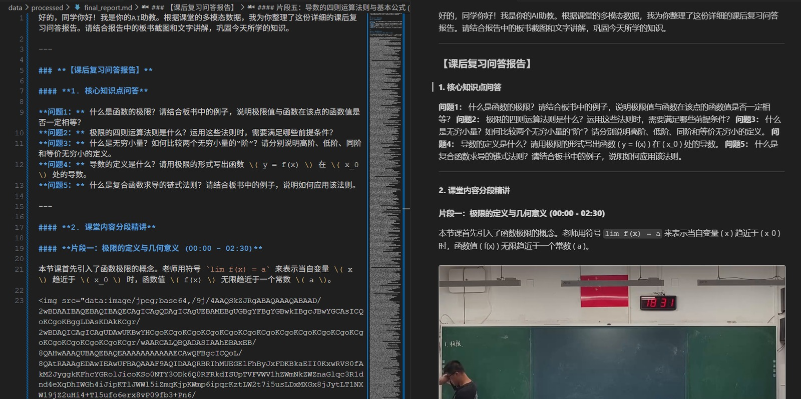
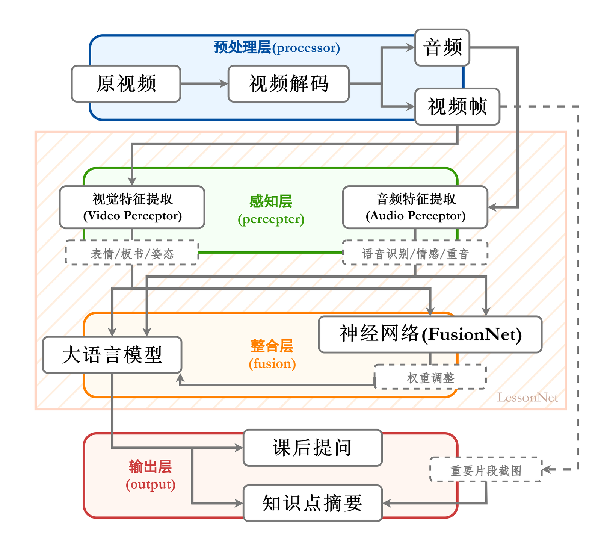
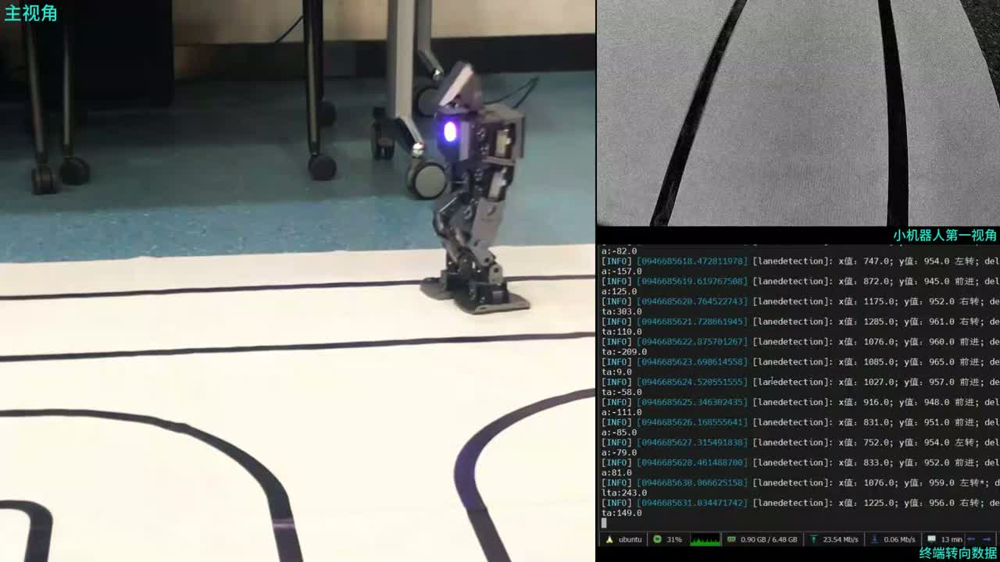
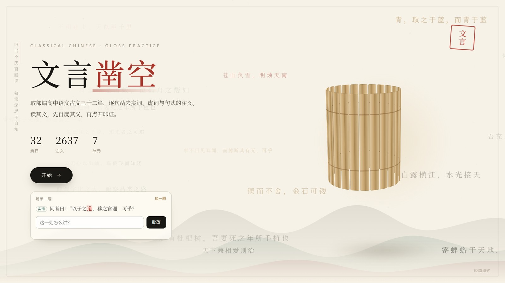
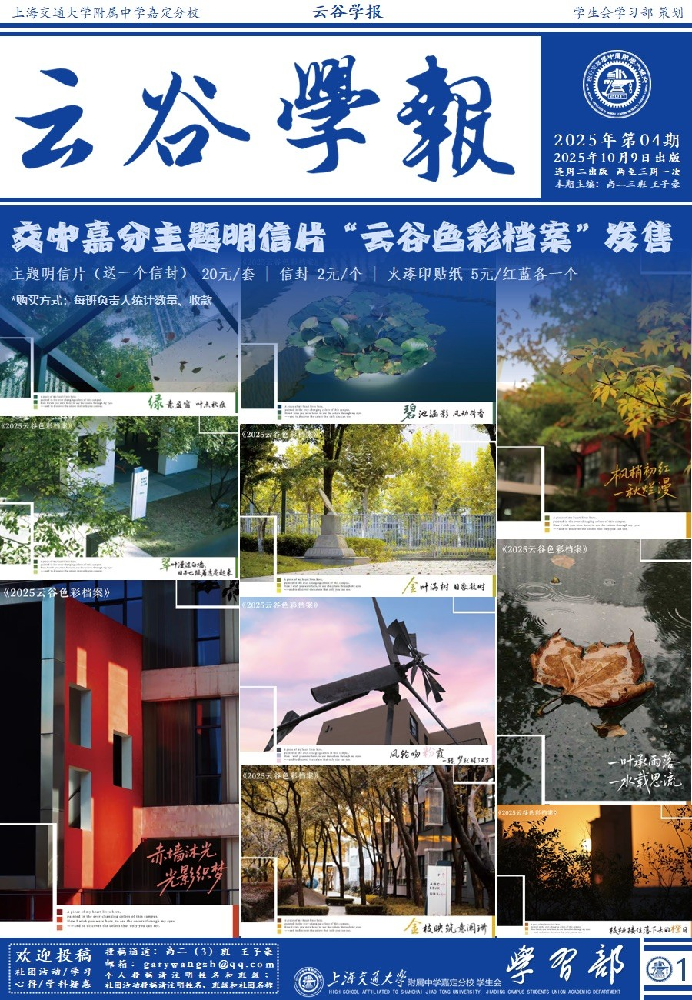
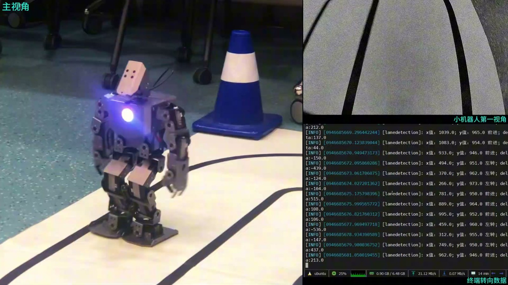
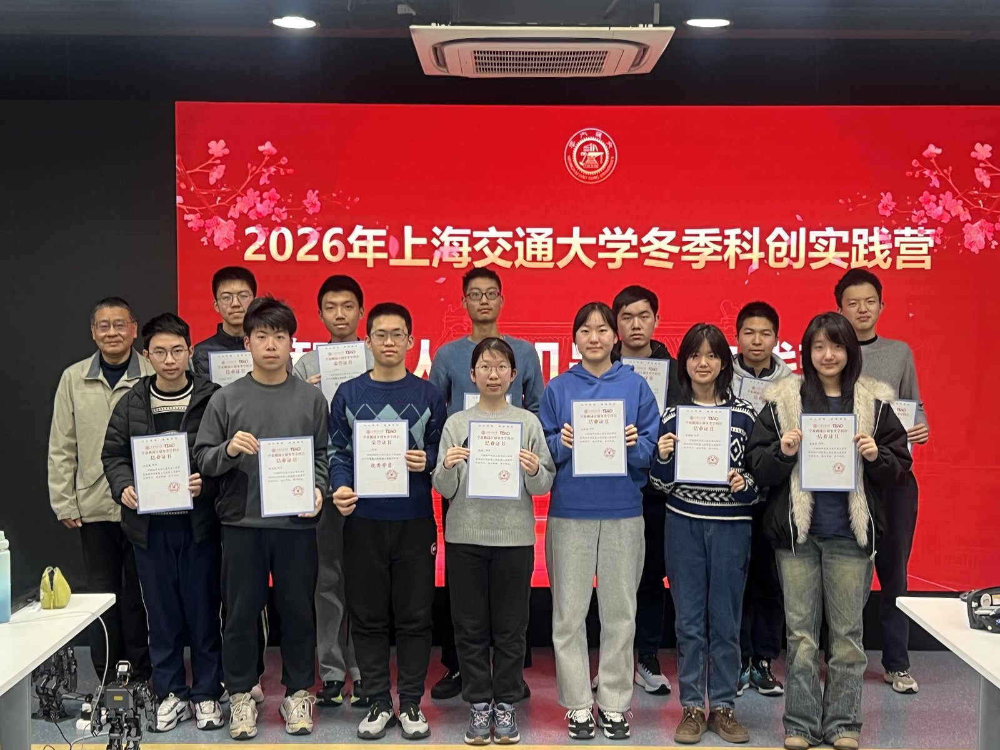
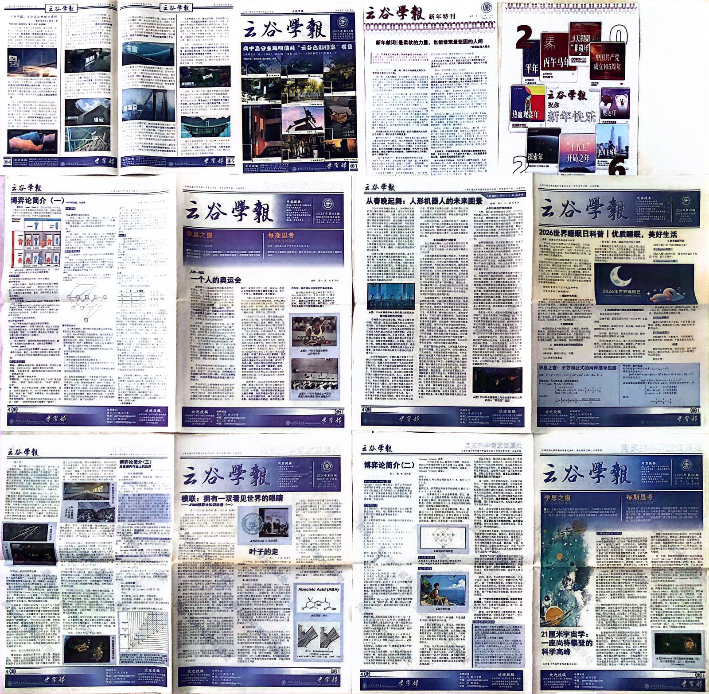
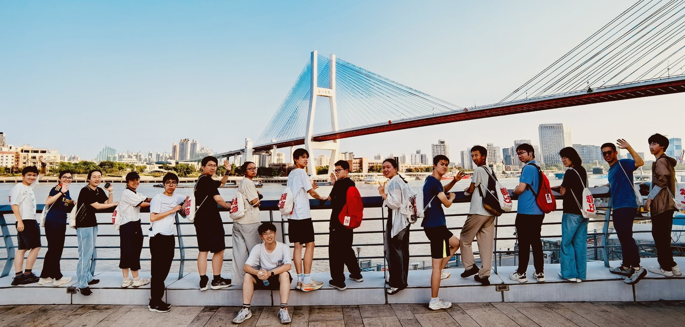
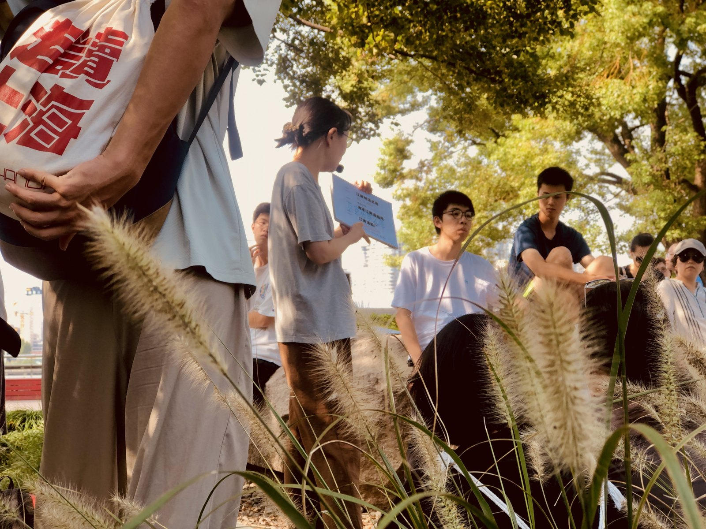

2026.11
Released Wenyan Zaokong, a public classical Chinese self-test app with 32 texts and 2,600+ glosses.上线 文言凿空：32 篇古文、2,600+ 条注义的逐句自测网页。
Open
Shanghai · Class of 2027上海 · 2027 届
HKU 2027 · BEng(Robo) → BEng(CE/EE/ElecE) → CDS(Delta+)港大 2027 · BEng(Robo) → BEng(CE/EE/ElecE) → CDS(Delta+)
I build systems that turn dense information into something people can use.我喜欢把密集的信息，变成真正能用的东西。
I am a high-school senior at High School Affiliated to SJTU, Jiading Campus. My work sits between mathematics, machine learning, and interfaces: most recently LessonNet, a multimodal system that turns long classroom videos into structured notes.我是上海交通大学附属中学嘉定分校的高三学生。我的兴趣在数学、机器学习与界面之间：最近在做 LessonNet，一个把长课堂视频变成结构化笔记的多模态系统。
Currently: finishing LessonNet and preparing the HKU 2027 application.现在：完成 LessonNet，准备港大 2027 申请。
Programme choices专业志愿1 BEng(Robo) · 2 BEng(CE/EE/ElecE) · 3 CDS(Delta+)1 BEng(Robo) · 2 BEng(CE/EE/ElecE) · 3 CDS(Delta+)
Small milestones, recent work, and things I have shipped.一些最近的节点、作品和正在发生的事。
A little more context on the work and how I got here.关于我的经历、兴趣和做事方式。
I am a high-school senior at High School Affiliated to SJTU, Jiading Campus in Shanghai. I am interested in the point where a model stops being an exercise and becomes a tool someone can actually use. That interest has taken me through mathematics competitions, a humanoid robot lab, a school newsroom, and most recently an independent research project called LessonNet.我是上海交通大学附属中学嘉定分校的高三学生。我关心的是：一个模型什么时候不再只是练习题，而是变成别人真正能用的工具。带着这个兴趣，我做过数学竞赛、人形机器人、校报，也独立完成了一项叫 LessonNet 的研究。
LessonNet started with a small annoyance: a 45-minute lesson contains maybe eight minutes that I actually need to revisit. I wanted a system that could watch the lesson, notice when the teacher slowed down or wrote the key step on the board, and turn those moments into notes. It became a four-stage multimodal pipeline, a 15-lesson dataset, a temporal Transformer, a 21-page paper, and a lot of debugging.LessonNet 始于一个很小的烦恼：一节 45 分钟的课，真正需要回看的大概只有八分钟。我想要一个系统，能看见老师放慢语速、抬手、写下关键步骤的那些时刻，并把它们变成笔记。这个项目后来变成四层流水线、15 节课的数据集、一个时序 Transformer、21 页论文，以及大量调试。
The rest of my work follows the same instinct. I built Wenyan Zaokong because recitation felt invisible; I built a line-following robot because a control model that stays on paper is not yet a system; I edited Yungu Journal and planned a stage production because the same question — how do you make something clear to another person? — applies outside engineering.其他项目也来自同一种直觉。做文言凿空，是因为“背诵”的过程看不见；做人形机器人，是因为停留在纸上的控制模型还不算系统；编云谷学报、做戏剧展演，是因为“如何让另一个人听懂”这个问题不只属于工程。
I am applying to HKU for 2027, with BEng(Robo), BEng(CE/EE/ElecE), and CDS(Delta+) as my first, second, and third choices. I am particularly interested in multimodal systems and human-centered tools, and I want to keep building things that leave the screen and reach a real user.我正在申请港大 2027 入学，第一至第三志愿依次为 BEng(Robo)、BEng(CE/EE/ElecE)、CDS(Delta+)。我尤其关注多模态系统与以人为中心的工具，也想继续做那些能离开屏幕、抵达真实用户的东西。
“A model is not finished when it is correct. It is finished when someone else can use it.”“模型不是“算对”就结束了，而是别人能用起来才算结束。”
Four projects, one thread: information → structure → something usable.四个项目，一条线：信息 → 结构 → 真正能用的东西。
I am most interested in the moment a model becomes a tool — when someone else can use it without asking me how.我最在意模型变成工具的那一刻：别人不需要问我怎么用，也能用起来。
LessonNet · Humanoid · Wenyan · ModelingLessonNet · 人形机器人 · 文言 · 数学建模


An independent research system that combines multimodal perception, temporal attention, and an LLM to find the moments that matter in a 45-minute lesson. I designed the pipeline, built the dataset and annotation tool, trained the scorer, and wrote the 21-page report.一个独立研究系统：用多模态感知、时序注意力与大模型，在 45 分钟的课堂里找到真正重要的片段。我设计了流水线、构建数据集与标注工具、训练评分模型，并完成 21 页论文。

At the SJTU Qian Xuesen Challenge Program, I worked from kinematics and control to training and parameter tuning, iterating until the robot tracked the road center. The camp named me an “Excellent Camper”.在上海交大“学森挑战计划”中，我从运动学、控制一路做到训练与参数调试，反复迭代，直到机器人能沿道路中心稳定行进。获评“优秀学员”。

A public web app built during full-subject exam review: 32 classical texts, 2,600+ glosses, sentence-level cloze, grading, custom entries, local save/export, and print. I designed it to make my own recitation practice testable.在全科复习期间独立开发并上线：32 篇古文、2,600+ 条注义，支持逐句挖空、批改、自建词条、本地存档与导出打印。我把“背诵”改造成可自测、可追踪的练习流程。

Team captain at the SJTU “Rongchang Cup”. I led problem framing, assumptions, model construction, solution, and review — and learned to divide work without losing the whole argument.上海交大“荣昶杯”数学建模竞赛队长。负责选题、假设、建模、求解与复盘，在分工与整合之间保持论证完整；获二等奖。
Titles matter less than whether the thing actually shipped.头衔不重要，事情有没有真正落地更重要。
Coordinate class routines and act as the main link between classmates and teachers; handle scheduling and conflicts.协调班级日常，连接同学与老师，处理排期与冲突。
Led academic exchange initiatives; worked across departments to turn student feedback into events and resources.组织学术交流活动，把学生反馈变成具体活动与资源。
Ran the full editorial and production cycle; launched two new issue themes, redesigned the layout, and piloted AI-assisted proofreading.统筹编辑出版全流程；推出两个新主题、改版版面，并尝试 AI 辅助校对。

Library organization, event logistics, and backstage support for the campus singer competition — the unglamorous work that makes an event run.图书馆整理、活动场务、校园歌手大赛后台——让活动真正跑起来的那些不显眼的工作。
I was the chief planner for our school’s full-stage adaptation of Dream of the Red Chamber. The role was less about having a single idea and more about holding a hundred small dependencies together: script adaptation, casting, props, rehearsal schedules, stage cues, and volunteers.我是学校《红楼梦》戏剧展演的总策划。这个角色不是“想出一个点子”，而是把上百个小依赖接在一起：剧本改编、选角、道具、排练排期、舞台调度与志愿者。
The production was performed for students, teachers, and parents. It taught me how to make a plan that survives contact with reality — and how to keep a team moving when the plan changes.展演面向师生和家长完成。它让我学会做一份能经受现实修改的计划，也学会在计划变化时让团队继续往前走。
Lab, stage, newsroom, city — the parts of the work that are easier to show than to describe.实验室、舞台、编辑部、城市——有些部分，图片比文字更直接。

Robot on the track赛道上的机器人
SJTU humanoid robotics camp上海交大人形机器人营
Rongchang Cup awards荣昶杯颁奖典礼

Yungu Journal issues云谷学报版面 Dream of the Red Chamber戏梦红楼 Dream of the Red Chamber: stage戏梦红楼：舞台
Dream of the Red Chamber: cast and crew戏梦红楼：演职人员
Dream of the Red Chamber: stage戏梦红楼：舞台
Dream of the Red Chamber: cast and crew戏梦红楼：演职人员

Reading Shanghai: Yangshupu走读上海：杨树浦A record of the work, not the whole story.一些被记录下来的结果，不是全部。
The things that keep the engineering honest.让工程保持诚实的东西。

30 sites over seven years, from Yangshupu Industrial District to the Greater Shanghai Plan buildings — a long-running attempt to understand the city through its industrial and civic layers.从 2019 到 2026，30 站城市研学：杨树浦工业区、“大上海计划”建筑群……用脚步理解城市的工业与市政层次。
District first prize in the classical Chinese competition, and the reason Wenyan Zaokong exists: reading slowly, testing myself, and making the process visible.古诗文大赛区一等奖，也是文言凿空存在的原因：慢读、自测，并把过程变得可见。
Chief planner for a full-stage Dream of the Red Chamber production, and a 4×100m relay runner. Both are about handoffs.《红楼梦》戏剧展演总策划，也是 4×100m 接力队员。两件事都和“交接”有关。
For admissions, project questions, or a conversation about multimodal systems, email me.关于申请、项目或多模态系统，欢迎邮件联系。